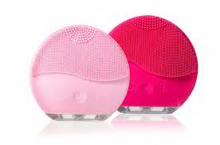

SZCZOTECZKI CO TO?
Szczoteczka do mycia twarzy - dla kogo? ... Szczoteczka pozwoli na głębokie oczyszczenie porów skóry z nadmiaru sebum i resztek makijażu, zmniejszając tym samym skłonności skóry tłustej i trądzikowej do niedoskonałości. Mogą ją jednak stosować również posiadaczki skóry mieszanej, suchej czy normalnej
Kto powinien unikać szczoteczek do oczyszczania twarzy?
Elektryczne szczoteczki do mycia twarzy mogą nie do końca sprawdzić u osób, które mają do czynienia ze skórą wrażliwą i różnymi jej odmianami (naczynkową, alergiczną, atopową). Intensywność ruchów szczoteczki może podrażnić skórę, wywołać na jej powierzchni zaczerwienienia, a także zwiększyć skłonność do pękania naczynek krwionośnych. W tym przypadku lepiej zdecydować się na silikonową myjkę do twarzy lub pozostać przy tradycyjnej metodzie oczyszczania skóry. Pamiętajmy też o tym, że szczoteczka jest urządzeniem, które zostało przeznaczone wyłącznie do oczyszczania skóry twarzy - oznacza to tym samym, że maszynka nie zastąpi nam w żaden sposób tradycyjnego demakijażu oczu przy użyciu wacika i wybranego płynu.